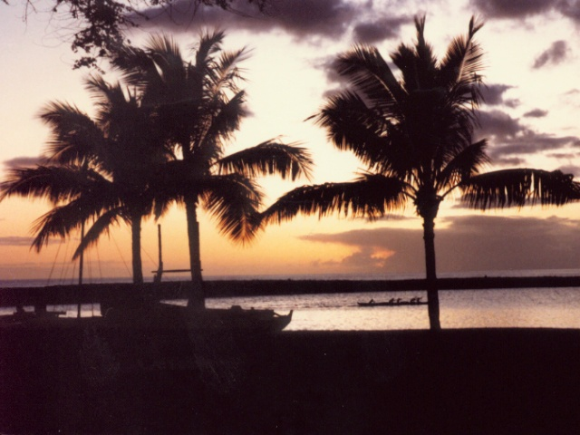

| Authors: The deadline
for camera-ready papers is August 27th. Full instructions are
available at Sheridan Printing's Preparation of
Copy.
|
|
| RECENT UPDATES | |
| 2003/09/18 |
List of attendees posted. Check to make sure you are registered. |
| 2003/09/11 |
Directions on the venue page
have (slightly) changed. They changed exit 21 to exit 131/ |
| 2003/09/10 |
Information for Authors
paying for extra pages in the proceedings. |
| 2003/09/10 |
Conference schedule updated. |
| 2003/09/05 |
Directions on how to get to the conference site are
now posted on the venue page. |
| 2003/09/04 |
Preliminary, tentative conference
schedule (workshops only so far) added. |
| 2003/09/01 |
Call for Participation
added |
| 2003/08/22 |
Registration is now open using the web registration
form. |
| 2003/08/06 |
Hotel booking
information posted (use the "venue" item on the left menu) |
| 2003/07/22 |
Accepted papers
posted |
| 2003/05/26 | Workshops posted |